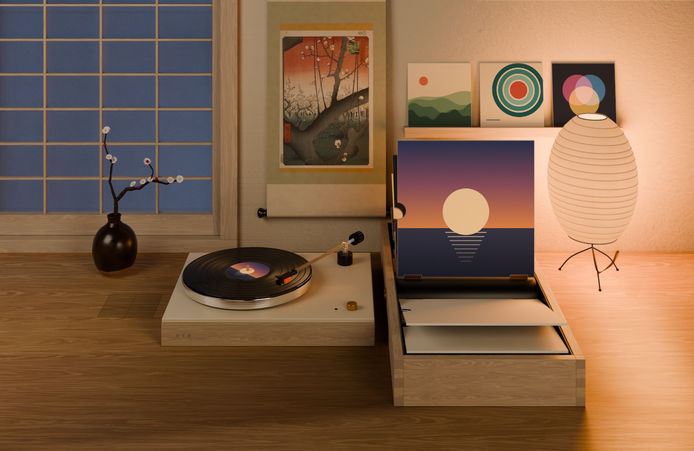
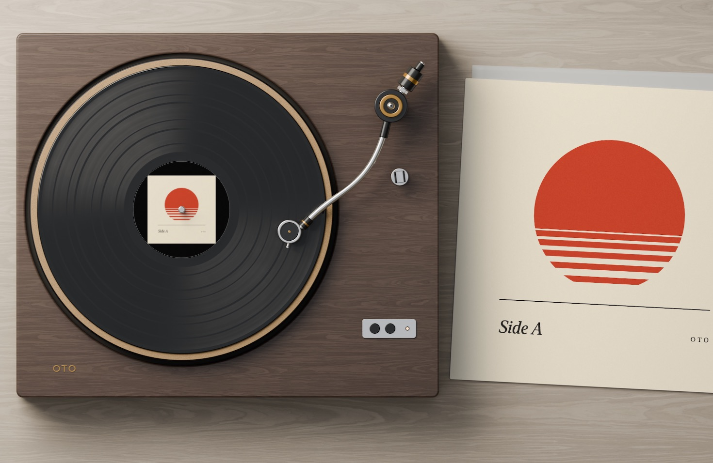
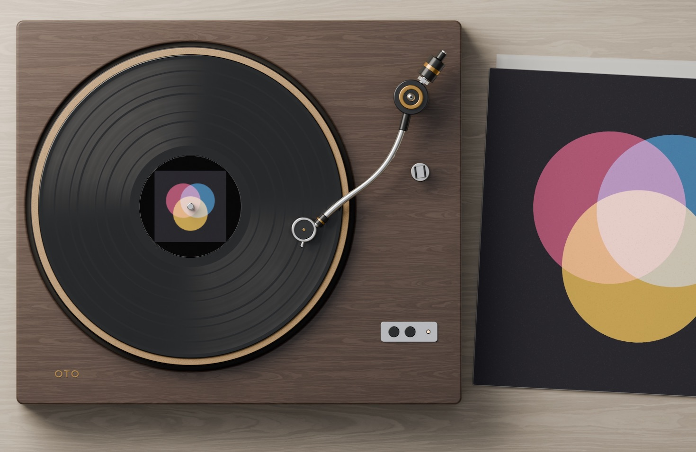
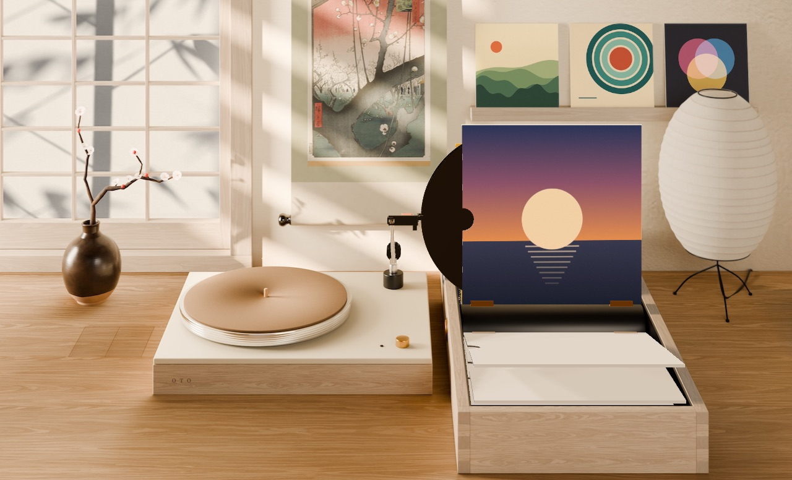
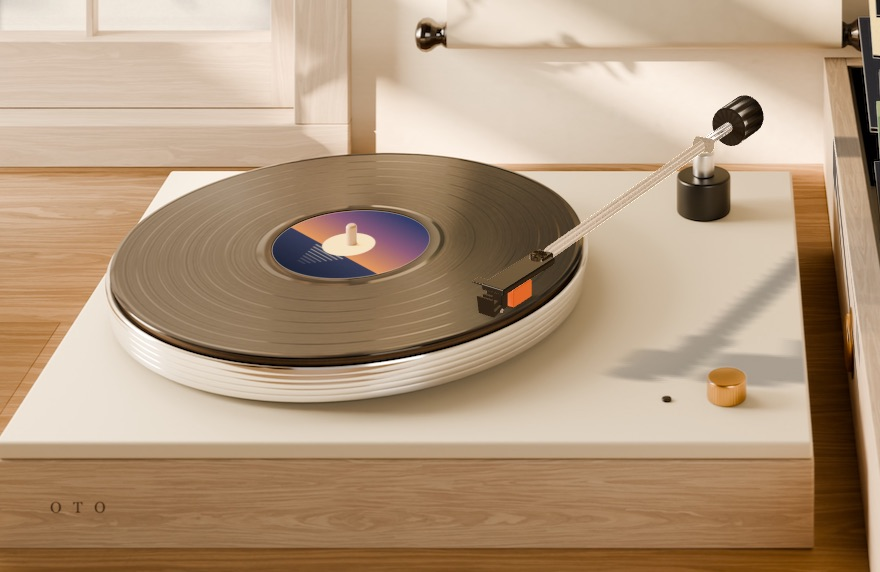
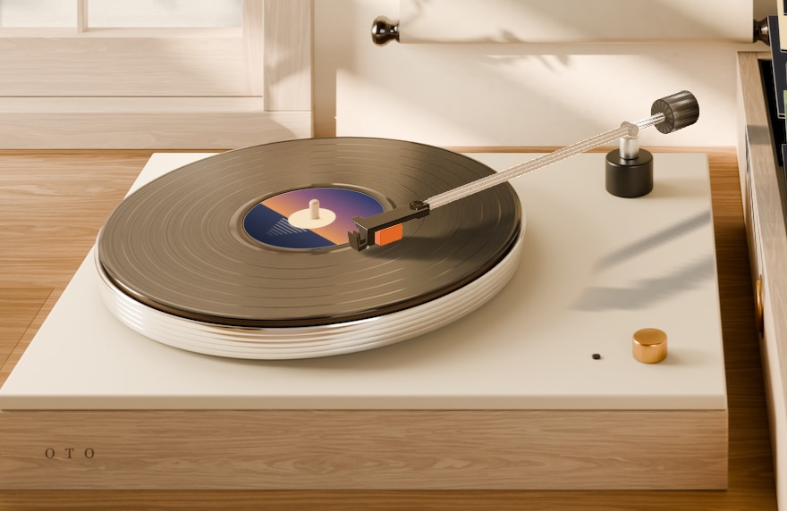
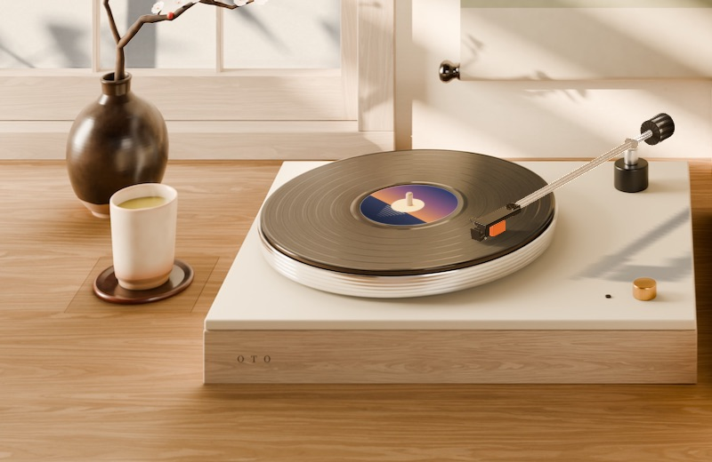
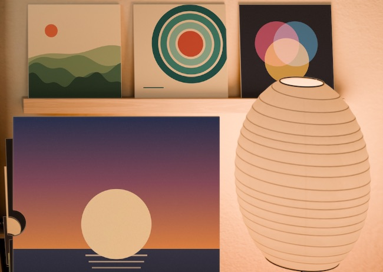
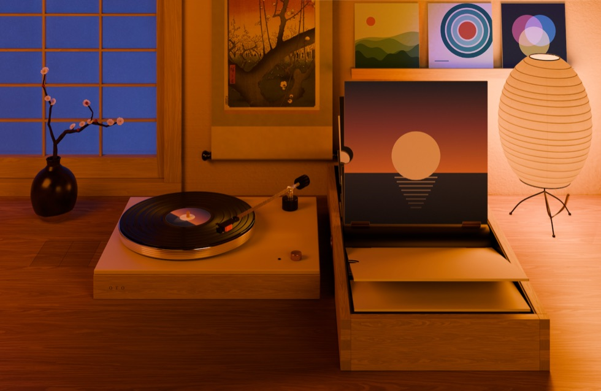
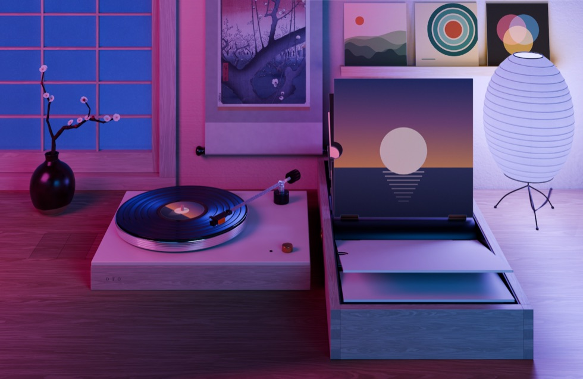

Two rooms and a close-up
The Listening Room by day, After Hours by lamplight, and a top-down Turntable view. Each comes in three framings: wide, mid and close.


音 (oto) means “sound” in Japanese.
A turntable for your desktop.
Oto puts a calm, photo-realistic room on your Mac’s desktop, behind your icons. The record on the turntable is whatever you’re playing in Spotify or Apple Music. Change the album and the record changes with it. In the two rooms, an arm even puts the old record away and fetches the new one.
Free · macOS 14 or newer · Apple silicon and Intel · about 400 MB · Beta

What it does
Click the little record icon in the menu bar to pick a room and switch things on or off. For the settings window, choose Open Oto… in that menu.
The Listening Room by day, After Hours by lamplight, and a top-down Turntable view. Each comes in three framings: wide, mid and close.


Look straight down at the record. The cover of the album that’s playing sits on the sleeve beside the turntable, and the label turns slowly while the music plays.

Every album you play gets its own sleeve in the wheel. When the album changes, the arm puts the old record back in its sleeve and pulls the new one out.


The needle creeps inward as the song plays and swings back out at the end, the way a real record does.

Switch it on and a panel in the desk opens and a cup of tea rises up. “Panel seam” shows or hides the panel’s outline when the tea is put away.

Your top three albums stand on a ledge above the wheel. Oto counts what you actually listen to, on your Mac.
The room’s lights follow the genre of the song: a warm amber pool for jazz, cool neon for electronic, and more. You can also pick a mood yourself. Dance to the beat makes the lantern pulse with the music (Gentle, Normal or Strong).
Mood lighting starts off: switch it on in the record menu. Dance to the beat asks once for “System Audio Recording” and needs macOS 14.2 or newer. Oto listens only to the music app, and nothing is recorded or sent anywhere.


Pause the music and the needle lifts while the record slows to a stop. Press play and it spins up and the needle lowers back onto the song.
When your Mac is in Low Power Mode (or Reduce Motion is on), record swaps and pauses happen instantly instead of being animated. That’s on purpose, to save energy.
Apart from Oto’s own “Side A” cover, the album covers in these pictures are made up for this page. Oto shows the real cover of whatever you’re playing.
See it move
Works with
The Spotify desktop app. Oto knows exactly where you are in the song.
The Music app on your Mac. Oto sometimes has to estimate where you are in the song, so the needle can be a moment off.
First open
Oto isn’t from the App Store, so macOS asks you to confirm it once. It takes about a minute.
Unzip the download: double-click Oto-….zip (Safari may already have done it). You get
“Oto”. Drag it into your Applications folder. Do this first: Oto can’t update itself from the
Downloads folder.
The first time, macOS stops it with a warning such as “Apple could not verify ‘Oto’ is free of malware” or “Oto can’t be opened because Apple cannot check it for malicious software”. Close the message with Done, OK or Cancel (whichever it shows). Not “Move to Trash”.
Open System Settings → Privacy & Security, scroll down to “Oto was blocked to protect your Mac” and click Open Anyway. Confirm with your password or Touch ID, and click Open Anyway once more if macOS asks again.
In Applications, Control-click (or right-click) Oto, choose Open, then Open again.
You only do this once. After that Oto opens normally.
Oto lives in the menu bar (a little record icon, top right) and shows its settings the first time. When music plays, macOS asks whether Oto may control Spotify or Music: click Allow. That’s how it sees what’s playing.
Oto isn’t broken. macOS is being extra strict with the download. Make sure Oto is in Applications, open the Terminal app, paste this line and press Return, then open Oto again:
xattr -dr com.apple.quarantine /Applications/Oto.appPrivacy
No account, no ads, no analytics, no tracking. This list was checked against Oto’s code.
Like any website, Spotify, Apple and GitHub can see your Mac’s internet address when Oto asks them something. Apart from that region code, nothing about you is sent.
I made Oto myself: the rooms, the record machine, all of it. It’s free. If it makes your desk a little nicer, you can send me a coffee: a small tip, whatever you like. Thank you!
Questions
Apps from the App Store, or from developers in Apple’s paid Developer Program, are “notarized”: Apple has scanned them. Oto is a free hobby project and isn’t notarized, so macOS asks you to allow it once. The steps are in First open. If it says Oto is “damaged”, use the one-line fix.
Oto only draws when something on the desk moves: the turning record, a swap, the lights changing. Between movements it waits. When windows cover the desktop or the screen goes to sleep, it stops drawing completely.
In Low Power Mode (or with Reduce Motion on), swaps and pauses are instant and the decorative motion, like the swaying shadows and the dancing lantern, stands still.
Not yet. Oto works with the Spotify desktop app and Apple Music (the Music app). Music playing in a web browser or in other apps isn’t shown.
Copies downloaded from this page update themselves: about once a day Oto checks for a new version and installs it (your desktop blinks once). To check right away, click the record icon in the menu bar and choose Check for Updates… from the menu.
After an update, macOS may ask again whether Oto may control Spotify or Music. Click Allow.
Use Report a problem. It helps to say which Mac you have (Apple silicon or Intel), your macOS version, whether you use Spotify or Apple Music, and what you saw, with a screenshot if you can. If a record swap didn’t animate, check whether Low Power Mode is on: swaps are instant there.